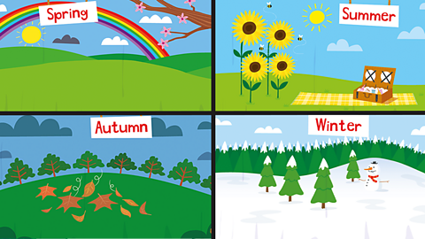

<!DOCTYPE html>
<html lang="en">
<!--Version 4.0
        Name:
        Date Completed:
    -->

<head>

    <title>WikiFood</title>
    <!DOCTYPE html>
    <html>

    <head>
        <title>My Page Title</title>
        <link rel="icon" type="image/x-icon" href="images/favico.ico">
        <style>
            @import url('https://fonts.googleapis.com/css2?family=Bungee+Spice&display=swap');
        </style>

    </head>

    <body>


    </body>

    </html>

    <!-- Meta -->
    <meta charset="utf-8">
    <meta http-equiv="X-UA-Compatible" content="IE=edge">
    <meta name="viewport" content="width=device-width, initial-scale=1, shrink-to-fit=no">
    <meta name="description" content="WebDev Version 4.0">

    <!-- CSS -->
    <link rel="stylesheet" href="https://cdnjs.cloudflare.com/ajax/libs/bootstrap/5.3.2/css/bootstrap.css">
    <!-- Font Awesome -->
    <link rel="stylesheet" href="https://cdnjs.cloudflare.com/ajax/libs/font-awesome/6.5.1/css/all.min.css">
    <link rel="stylesheet" href="CSS/style.css">

    <!-- JavaScript -->
    <!-- These are needed to get the responsive menu to work -->
    <script src="https://ajax.googleapis.com/ajax/libs/jquery/3.6.0/jquery.min.js "></script>
    <script src="https://cdnjs.cloudflare.com/ajax/libs/popper.js/1.14.7/umd/popper.min.js "></script>
    <script src="https://stackpath.bootstrapcdn.com/bootstrap/4.3.1/js/bootstrap.min.js "></script>

    <!-- Custom styles for this template -->
    <style type="text/css ">
        menu {
            margin: 0;
            padding: 0;
        }
        
        .wideMargin {
            margin: 15px;
        }
        
        footer {
            font-size: 10px;
            text-align: center;
        }
    </style>
</head>

<body>

    <!---------------------------------- Begin the nav-bar ------------->
    <div class="menu">
        <nav class="navbar navbar-expand-md p-2 navbar-dark bg-dark">
            <a href="http://shakonet.isd720.com/WebDev" class="navbar-brand">WikiFood</a>
            <button type="button" class="navbar-toggler" data-toggle="collapse" data-target="#navbarCollapse">
                <span class="navbar-toggler-icon"></span>
            </button>
            <a> </a>

            <div class="collapse navbar-collapse" id="navbarCollapse">
                <div class="navbar-nav">
                    <!--↓↓↓↓↓↓↓↓↓↓↓↓↓↓↓↓↓↓↓↓↓↓ Edit These Items in your Menu ↓↓↓↓↓↓↓↓↓↓↓↓↓↓↓↓↓↓↓↓↓↓-->
                    <a href="index.html " class="nav-item nav-link ">Home</a>
                    <a href="Why to eat.html " class="nav-item nav-link">Why to eat</a>
                    <a href="Seasons.html" class="nav-item nav-link active ">When to eat(seasons)</a>
                    <a href="What to eat.html " class="nav-item nav-link ">What to eat</a>
                    <a href="contact.html" class="nav-item nav-link " tabindex="-1 ">Contact</a>
                    <!--↑↑↑↑↑↑↑↑↑↑↑↑↑↑↑↑↑↑↑↑↑↑ Edit These Items in your Menu ↑↑↑↑↑↑↑↑↑↑↑↑↑↑↑↑↑↑↑↑↑↑-->
                </div>

                <div class="navbar-nav ms-auto">
                    <a href="#" class="nav-item nav-link disabled">Login</a>

                    <!-- Navbar brand -->
                    <a class="navbar-brand mt-2 mt-lg-0" href="#">
                        <a class="navbar-brand mt-2 mt-lg-0" href="#">
                            <i class="fa-regular fa-user"></i>
                        </a>

                        <!-- Toggle button -->
                        <button data-mdb-collapse-init class="navbar-toggler" type="button" data-mdb-target="#navbarSupportedContent" aria-controls="navbarSupportedContent" aria-expanded="false" aria-label="Toggle navigation">
  <i class="fas fa-bars"></i>
</button>
                        <!-- Right elements -->
                        <div class="d-flex align-items-center">
                            <!-- Icon -->
                            <a class="text-secondary me-3" href="" rel="nofollow" target="_blank">
                                <i class="fab fa-youtube"></i>
                            </a>
                            <!-- Icon -->
                            <a class="text-secondary me-3" href="" rel="nofollow" target="_blank">
                                <i class="fa-brands fa-x-twitter"></i>
                            </a>
                            <!-- Icon -->
                            <a class="text-secondary me-3" href="" rel="nofollow" target="_blank">
                                <i class="fab fa-github"></i>
                            </a>

                        </div>
                        <!-- Right elements -->

                        <!-- Left links -->

                        <!-- Right elements -->
                        <div class="d-flex align-items-center">
                            <!-- Icon -->
                            <a class="text-reset me-3" href="#">
                                <i class="fas fa-shopping-cart"></i>
                            </a>


                            <!-- Avatar -->
                            <div class="dropdown">
                                <a class="dropdown-toggle d-flex align-items-center hidden-arrow" href="#" id="navbarDropdownMenuAvatar" role="button" data-mdb-toggle="dropdown" aria-expanded="false">
                                    
                                </a>
                                <ul class="dropdown-menu dropdown-menu-end" aria-labelledby="navbarDropdownMenuAvatar">
                                    <li>
                                        <a class="dropdown-item" href="#">My profile</a>
                                    </li>
                                    <li>
                                        <a class="dropdown-item" href="#">Settings</a>
                                    </li>
                                    <li>
                                        <a class="dropdown-item" href="#">Logout</a>
                                    </li>
                                </ul>

                            </div>
                        </div>

                        <!-- Right elements -->

                    </a>
                </div>
            </div>
        </nav>
    </div>


    <!---------------------------------- End the nav-bar ------------->

    <main class="margin ">


        <!--↑↑↑↑↑↑↑↑↑↑↑↑↑↑↑↑↑↑↑↑↑↑ Make sure all your content is above this line ↑↑↑↑↑↑↑↑↑-->
    </main>
    </div>
    </div>
    <h3>Different Seasons Foods</h3>
    </td>
    <h4>This Is About Different Foods In All Four Seasons</h4>

    <p></td>
        <p> Summer Season, Summer is the season of abundance, and that includes a lot of delicious fruits. There's no shortage of sweet treats to enjoy. And not only are these fruits delicious, but they're also packed with nutrients that can help you stay
            healthy all summer long. Nothing like a homegrown tomato, still warm from the summer sun, or a crisp cucumber picked fresh from the vine. Summer vegetables are a treat for the senses and a joy to grow. ‍ Here are the top summer foods. ‍ Watermelon
            is one of the most hydrating fruits you can eat, which can help boost your immune system. Peaches are a great source of fiber, which can help keep you regular. Both are good sources of vitamins A and C. Cherries are a good source of antioxidants,
            which can help protect your cells from damage. Along with fiber and vitamin C, rich Strawberries are a good source of antioxidants. Raspberries, Blueberries, and Blackberries are good sources of fiber, vitamins C and K, and manganese. They're
            also a good source of antioxidants. Cantaloupe and Honeydew are good sources of vitamins A and C. Both are also good sources of potassium, which can help regulate blood pressure. Nothing tastes better than a freshly picked, ripe tomato. They
            are perfect for salads, sandwiches, and just eating alone. Cucumbers are refreshing and cooling, making them ideal for hot summer days. They can be eaten raw or pickled and are a great addition to any meal. Whether you like them sweet or spicy,
            peppers are a great summer vegetable. They can be used in a variety of dishes or just eaten on their own.</p>
        </td>
        <p> Winter Season, Winter fruits are an essential part of a healthy diet. They are a good source of vitamins and minerals and can help you stay hydrated. Winter fruits are also a good source of fiber, which can help you feel full and help you stay
            regular. Food in a bowl ‍ Many delicious fruits are in season during the winter months. Here are the top winter fruits: ‍ Citrus fruits are packed with vitamin C, essential for boosting the immune system. Pomegranates are a great source of
            antioxidants, which can help protect the body from free radicals. Quince and Persimmons are a winter fruit high in vitamin C, which is essential for maintaining a healthy immune system. Apple cider vinegar and Cranberries are winter fruits
            rich in vitamins and minerals and have many health benefits. ‍ There are a few vegetables that shine during the winter months. Top of the list are probably potatoes, carrots, and parsnips. ‍ Potatoes are versatile - they can be roasted, mashed,
            baked, or fried. They are a good source of fiber, vitamins C and B6. Carrots are great for adding sweetness and depth of flavor to stews and soups. These are excellent sources of vitamins A, C, and K. Parsnips have a lovely, slightly nutty
            flavor and are great roasted or mashed. They are a good source of fiber, vitamins C and B6.</p>
        </td>
        <p> Spring Season, Spring is the season of new beginnings, and what better way to start fresh than with some delicious fruits? Not only are they a great source of vitamins and minerals, but they can also help to boost your mood and give you energy.
            ‍ Here are some of the best spring foods to enjoy: ‍ Oranges are not only a great source of Vitamin C, but they can also help to improve your mood and reduce stress levels. Lemons are a great way to add a bit of zing to your water or your
            cooking. They're also full of antioxidants and can help to boost your immune system. Grapefruit is a great breakfast fruit or snack. It's full of Vitamin C and fiber and can help to lower cholesterol levels. Apricots are a great source of
            Vitamin A and beta-carotene, which can help to protect your eyesight. They're also a good source of fiber and potassium. Asparagus is a versatile vegetable that can be used in many different dishes. It is also a good source of vitamins A,
            C, and K. Artichokes are a great source of fiber and antioxidants. They can also help to lower cholesterol levels. Peas are a good source of protein, fiber, and vitamins A and C. </p>
        </td>
        <p> Autumn Season, Autumn fruits are an important part of the fall harvest. They provide essential nutrients and vitamins that help us stay healthy during the colder months. Food tray picture Some popular autumn fruits include apples, pears, plums,
            figs, quince, grapes, pomegranates, persimmons, pumpkins, and kiwis. Each of these fruits has unique benefits that can help improve our health. ‍ Apples are a great source of fiber and antioxidants. They can help reduce the risk of heart disease
            and cancer. Pears are a good source of vitamins C and K. They can help boost the immune system and protect against osteoporosis. Pumpkins are a good source of beta-carotene and fiber. They can help improve vision and reduce the risk of certain
            diseases. Sweet potatoes are an excellent source of Vitamin C, essential for boosting immunity. Sweet potatoes are also a good source of fiber and potassium, which can help to regulate blood pressure. Brussels sprouts are a great source of
            Vitamin C and folic acid, which are essential for pregnant women. Brussels sprouts are also a good source of fiber and potassium, which can help to reduce the risk of heart disease.</p>
        <!--↑↑↑↑↑↑↑↑↑↑↑↑↑↑↑↑↑↑↑↑↑↑ Make sure all your content is above this line ↑↑↑↑↑↑↑↑↑-->
        </main>


        <!---------------------------------- Begin the footer ------------->

        <footer class="bg-body-tertiary text-center text-lg-start">
            <!-- Grid container -->
            <div class="container p-4">
                <!--Grid row-->
                <div class="row">
                    <!--Grid column-->
                    <div class="col-lg-6 col-md-12 mb-4 mb-md-0">
                        <h5 class="text-uppercase">About us</h5>

                        <p>
                            <i class="fa-solid fa-school"></i> I am a student learning WEB DEVELOPMENT. This Is my WEBSITE
                        </p>
                    </div>
                    <!--Grid column-->

                    <!--Grid column-->
                    <div class="col-lg-6 col-md-12 mb-4 mb-md-0">
                        <h5 class="text-uppercase">Contact us</h5>

                        <p>
                            <i class="fa-solid fa-envelope"></i> 312352@shakopeeschools.org

                    </div>

                    <!--Grid column-->
                </div>
                <!--Grid row-->
            </div>
            <!-- Grid container -->


            </div>
            <!-- Copyright -->


            <!-- Grid container -->
            <!-- Copyright -->
            <div class="text-center p-3" style="background-color: rgb(80, 167, 97);">
                © 2024 Copyright:
                <a class="text-body" href="http://127.0.0.1:5500/Version6.0/user10/index.html">http://127.0.0.1:5500/Version6.0/user10/index.html</a>


            </div>
        </footer>

</html>
<!---------------------------------- End the footer ------------->